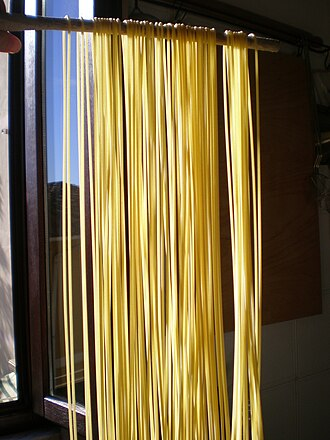
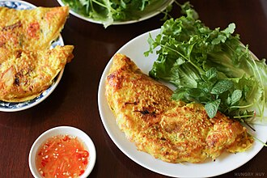
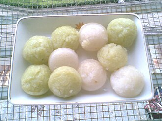
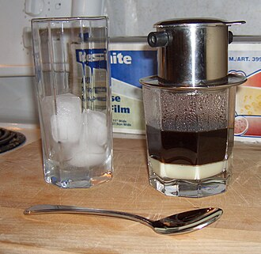
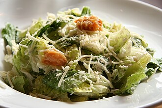
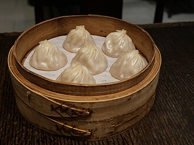
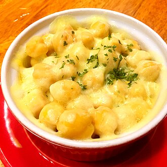

cooking
26 recipes. Difficulty ranks prep effort. Nutrition columns are single best-guess values for the listed serving. Recipes use short step lists.
canonical domain: cooking.aolabs.io
fallback route: aolabs.io/cooking
picture
entree
pasta

- Boil De Cecco #11 thin spaghetti, quarter-sized dry bundle.
- Warm half a 24 oz jar Rao's mushroom Italian sausage sauce; finish with Parmigiano Reggiano.
775 kcal
30g
1,050mg
48mg
breakfast
greek yogurt and granola

- Spoon about half a tub Friendly Farms nonfat Greek yogurt.
- Add Millville Protein Oats & Honey granola to size.
600 kcal
58g
2,100mg
23mg
entree
rice and eggs

- Cook a big serving of jasmine rice.
- Top with 4 eggs.
780 kcal
31g
1,100mg
750mg
entree
salmon and soy sauce

- Cook about 1 lb kosher salmon.
- Serve with a lot of soy sauce for dipping.
1,000 kcal
98g
3,400mg
285mg
beverage
avocado smoothie

- Blend 2 avocados with ice.
- Add lactose-free whole milk until it covers the ice.
850 kcal
23g
800mg
70mg
dessert
crème brûlée
- Heat cream with vanilla; temper into egg yolks and sugar.
- Bake ramekins in a water bath, chill, then brûlée a thin sugar top.
450 kcal
7g
250mg
200mg
entree
Bánh xèo

- Make rice flour, cornstarch, turmeric, coconut milk, water, and green onion batter.
- Fry thin with pork belly, shrimp, mung beans, and bean sprouts; fold with herbs and nước chấm.
650 kcal
28g
1,000mg
170mg
dessert
da ua

- Warm milk and dissolve condensed milk.
- Stir in yogurt starter; jar and incubate around 110°F for 8 hours, then chill.
205 kcal
9g
330mg
33mg
dessert
Bánh bò nướng

- Blend pandan water, coconut milk, eggs, sugar, tapioca starch, rice flour, salt, butter, and baking powder.
- Strain, pour into a hot pan, bake at 350°F, and cool upside down.
300 kcal
6g
220mg
105mg
dessert
Bánh bò

- Mix rice flour, tapioca starch, sugar, salt, yeast, vanilla, coconut milk, and warm water.
- Proof until frothy; pour into hot greased molds and steam until springy.
250 kcal
5g
80mg
0mg
appetizer
Bánh bèo

- Steam thin rice flour and tapioca batter in small dishes.
- Top with dried shrimp, scallion oil, fried pork fat, and nước chấm.
500 kcal
15g
550mg
65mg
beverage
mung bean milk tea with boba

- Soak whole mung beans 4-8 hours; blend with water and strain.
- Boil with rock sugar, pandan, and salt; chill and serve with milk or tea plus boba.
575 kcal
9g
340mg
13mg
beverage
cà phê sữa đá

- Brew a large phin batch with Café Du Monde coffee grounds.
- Mix with condensed milk at about 1/3 condensed milk; pour over ice.
250 kcal
6g
180mg
25mg
dessert
beignets

- Use Café Du Monde mix or yeast dough; roll and cut squares.
- Fry until puffed; cover heavily with powdered sugar.
600 kcal
11g
350mg
8mg
beverage
café au lait

- Brew strong Coffee and Chicory.
- Mix half coffee with half hot milk; serve hot, iced, or frozen.
185 kcal
9g
320mg
30mg
dessert
disney churros
- Boil water, butter, salt, and cinnamon; stir in flour.
- Cool 5-7 minutes, beat in eggs, pipe 1-inch bites, fry, and toss with cinnamon sugar.
375 kcal
6g
220mg
55mg
dessert
mochi donuts

- Make Pon de Ring-style dough with tapioca flour, AP flour, butter, eggs, warm milk, yeast, sugar, vanilla, and salt.
- Shape connected dough balls, fry on parchment, then glaze plain or matcha.
350 kcal
5g
180mg
50mg
snack
Point Reyes blue cheese block

- Buy Point Reyes blue cheese.
- Use 1 oz as the serving basis for this row.
100 kcal
6g
300mg
25mg
entree
caesar salad

- Chop romaine; add Parmesan, croutons, avocado, and 2 eggs.
- Dressing: garlic, lemon, Dijon, Worcestershire, anchovy, egg yolk or mayo, olive oil, and Parmesan.
725 kcal
34g
1,200mg
470mg
appetizer
shao mai

- Mix pork, chopped shrimp, ginger, scallion, soy sauce, Shaoxing wine, sesame oil, white pepper, and cornstarch.
- Pack into thick shao mai wrappers; top with shrimp and steam.
600 kcal
38g
1,500mg
145mg
appetizer
kurobuta pork xiao long bao

- Use thin soup dumpling skins with Kurobuta pork, broth gel, ginger, and green onion.
- Fold toward the 18-fold look and steam; easiest trusted version is ordering Din Tai Fung.
550 kcal
30g
1,150mg
110mg
entree
butaton-style tonkotsu ramen
- Use rich tonkotsu broth, thin noodles, pork belly or chashu, egg, green onion, bean sprouts, and seaweed.
- For Butaton-style, add spicy broth, black garlic oil, and kikurage.
1,025 kcal
45g
1,650mg
250mg
dessert
sticky rice with mango and coconut

- Soak and steam glutinous rice.
- Fold in salted sweet coconut cream; serve with mango, sauce, and sesame or crispy mung beans.
700 kcal
9g
150mg
0mg
beverage
thai tea
- Brew strong Thai tea mix or black tea with spices; strain.
- Sweeten with condensed milk and sugar; chill and pour over ice with evaporated milk or half-and-half.
350 kcal
6g
220mg
25mg
side
Gyeranjjim (Korean steamed eggs)

- Whisk 2-3 eggs with anchovy broth or water, salt, scallion, and sesame oil.
- Steam gently in a ttukbaegi or covered bowl until soft and barely set.
250 kcal
17g
700mg
465mg
side
cheese corn

- Mix corn with butter, mayonnaise, a little sugar, salt, and pepper.
- Heat in a skillet; cover with mozzarella and melt or broil until bubbling.
475 kcal
14g
500mg
65mg